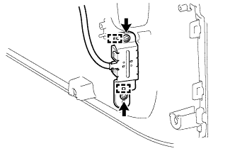

ВЫКЛЮЧАТЕЛЬ БЛОКИРОВКИ / РАЗБЛОКИРОВКИ СИСТЕМЫ ПОСАДКИ > УСТАНОВКА |
| 1. УСТАНОВИТЕ ВЫКЛЮЧАТЕЛЬ ЭЛЕКТРОННОГО КЛЮЧА НА ДВЕРИ БАГАЖНОГО ОТДЕЛЕНИЯ (для моделей с кронштейном запасного колеса на двери багажного отделения) |
 |
Введите в зацепление 2 направляющих, чтобы установить выключатель электронного ключа на двери багажного отделения.
Заверните 2 винта.
| 2. УСТАНОВИТЕ КОЛПАК ЛАМПЫ ОСВЕЩЕНИЯ ЗАДНЕГО НОМЕРНОГО ЗНАКА (для моделей с кронштейном запасного колеса на двери багажного отделения) |
Установите колпак лампы освещения заднего номерного знака и закрепите его 5 винтами.
| 3. УСТАНОВИТЕ НАРУЖНУЮ ОБЛИЦОВКУ ДВЕРИ БАГАЖНОГО ОТДЕЛЕНИЯ В СБОРЕ (для моделей с кронштейном запасного колеса на двери багажного отделения) |
Установите наружную облицовку двери багажного отделения в сборе (Нажмите здесь).
| 4. УСТАНОВИТЕ ВЫКЛЮЧАТЕЛЬ ЭЛЕКТРОННОГО КЛЮЧА НА ДВЕРИ БАГАЖНОГО ОТДЕЛЕНИЯ (для моделей без кронштейна запасного колеса на двери багажного отделения) |
|  |
Введите в зацепление 2 направляющих, чтобы установить выключатель электронного ключа на двери багажного отделения.
Заверните 2 винта.
 |
Закрепите зажим.
| 5. УСТАНОВИТЕ ФИКСАТОР ОБЛИЦОВКИ ДВЕРИ БАГАЖНОГО ОТДЕЛЕНИЯ № 1 (для моделей без кронштейна запасного колеса на двери багажного отделения) |
Установите фиксатор облицовки двери багажного отделения № 1 и закрепите его 3 винтами.
| 6. УСТАНОВИТЕ НАРУЖНУЮ ОБЛИЦОВКУ ДВЕРИ БАГАЖНОГО ОТДЕЛЕНИЯ В СБОРЕ (для моделей без кронштейна запасного колеса на двери багажного отделения) |
Установите наружную облицовку двери багажного отделения в сборе (Нажмите здесь).